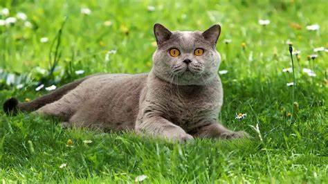
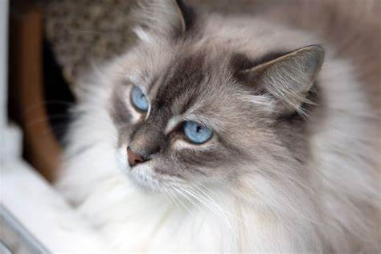

Volver
-
¿Qué son?
- El gato es un mamífero carnívoro de la familia de los félidos, digitígrado, doméstico, de unos 50 centímetro(s) de largo desde la cabeza hasta el arranque de la cola, que por sí sola mide unos 20 centímetro(s), de cabeza redonda, lengua muy áspera, patas cortas y pelaje espeso, suave, de color blanco, gris, pardo, rojizo o negro, que se empleaba en algunos lugares para cazar ratones. Usado en masculino referido a la especie.
-
¿De que se alimentan?
- El gato es un animal estrictamente carnívoro. Se alimenta de lo que caza, no es carroñero, y basa su dieta en la ingesta de roedores, pájaros, reptiles y, ocasionalmente, pequeños insectos y peces.
-
¿Cuales son las razas de gato mas comúnes?
-
- Ragdoll
- British Shorthair
- Persas
- Maine coon
- Absinio
Ragdoll  |
British Shorthair |
Persa  |